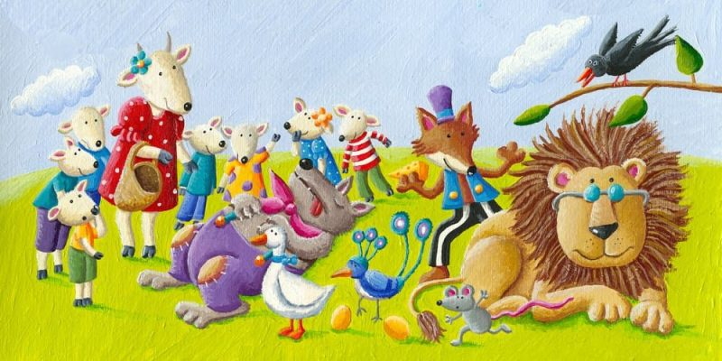

Animais d floresta

Em uma floresta vibrante, onde o sol filtrava suas luzes entre as folhas, os animais decidiram criar uma orquestra.
O sábio leão, com seu imponente rugido, convocou todos para uma reunião.
“Vamos tocar juntos e fazer a música mais bonita que a floresta já ouviu!” Todos ficaram animados, mas logo surgiram desavenças.
O esquilo queria tocar um tambor, enquanto a raposa preferia um violino.
Certa manhã, eles se reuniram sob uma grande árvore.
O coelho trouxe um acordeão, a coruja trouxe uma flauta, e o elefante, com sua trompa longa, trouxe um trompete.
No entanto, ao começarem a tocar, a música soava desajeitada.
Cada um queria ser o protagonista, e a harmonia se perdia entre os ruídos.
O leão, percebendo a confusão, decidiu intervir.
“Vamos tentar algo diferente. Cada um de vocês deve escutar os outros.
A verdadeira música surge da colaboração.”
Inspirados por suas palavras, os animais fizeram uma pausa e começaram a ouvir.
O esquilo ajustou seu ritmo, a raposa encontrou a melodia perfeita para o violino, e a coruja tocou suavemente sua flauta, guiando os outros.
Com o tempo, a música começou a fluir. Os sons se entrelaçaram em uma sinfonia mágica que reverberou pela floresta.
Animais de longe vieram para ouvir, e todos dançaram sob a luz do sol.
No final do dia, exaustos, mas felizes, perceberam que a verdadeira beleza estava na diversidade de seus talentos e na união de suas vozes.
Aprenderam que juntos podiam criar algo extraordinário, e a floresta nunca mais foi a mesma.
A moral da história é que a verdadeira harmonia surge da colaboração e do respeito às diferenças.
Quando cada um ouve e valoriza o outro, é possível criar algo muito mais belo e significativo do que se estivesse sozinho.
Juntos, somos mais fortes!